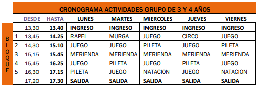

<html lang="en">
<head>
    <meta charset="UTF-8">
    <meta http-equiv="X-UA-Compatible" content="IE=edge">
    <meta name="viewport" content="width=device-width, initial-scale=1.0">
    <title>DiaDeColonia</title>
    <link rel="stylesheet" href="./css/style.css">
    
    <link href="https://cdn.jsdelivr.net/npm/bootstrap@5.0.0/dist/css/bootstrap.min.css" rel="stylesheet" integrity="sha384-wEmeIV1mKuiNpC+IOBjI7aAzPcEZeedi5yW5f2yOq55WWLwNGmvvx4Um1vskeMj0" crossorigin="anonymous">
</head>
<body background="./resources/spots.jpg">
    <!--BARRA DE NAVEGACION Y TITULO-->
<header class="gradient">
    
    <div class="contenedor">
        
        
        
       
    </div>
    <nav class="navbar navbar-expand-lg navbar-light bg-light">
        <div class="container-fluid">
          <a class="navbar-brand" href="quienesSomos.html">QUIENES SOMOS</a>
          <button class="navbar-toggler" type="button" data-bs-toggle="collapse" data-bs-target="#navbarNavAltMarkup" aria-controls="navbarNavAltMarkup" aria-expanded="false" aria-label="Toggle navigation">
            <span class="navbar-toggler-icon"></span>
          </button>
          <div class="collapse navbar-collapse" id="navbarNavAltMarkup">
            <div class="navbar-nav">
                <a class="nav-link" href="dondeEstamos.html">DONDE ESTAMOS</a>
                <a class="nav-link" href="galeria.html">GALERIA DE FOTOS</a>
                <a class="nav-link" href="index.html">VOLVER AL MENU</a>
                
            </div>
            <div>
              
            </div>
          </div>
          
        </div>
      </nav>
      >
    <div class="contenedor__titulo">
        <h1>Diversión para tus vacaciones!</h1>
        
        </div>
    >
</header>
<body>
    <div class="card mb-2">
        
        <div class="card-body">
          <h5 class="card-title">EJEMPLO DE CRONOGRAMA DE UN DIA DE COLONIA</h5>
          <p class="card-text">Las actividades están divididas en bloques de 40 minutos 
            con 5 minutos extra para movilizarse de un lado a otro. La 
            mayoría de los grupos merienda al mismo horario en un 
            bloque de 30 minutos.
            La colonia funciona en 2 turnos: turno mañana de 9 a 13 
            hs. y turno tarde de 13.30 a 17.30 hs. El doble turno es de 
            9 a 17.30 hs. o posibilidad de extensión horaria.
            La propuesta para los niños que concurran doble turno 
            consiste en 8 bloques de actividades, 2 ingresos al natatorio por día, también implica, un desayuno/colación, 
            almuerzo y merienda. Todas estas comidas deben ser 
            provistas por los padres, o compradas en la cantina del 
            club (la bebida, tanto para hidratación durante la jornada 
            como en las comidas es provista por la colonia). Los niños 
            no están autorizados a salir del club bajo ningún concepto.<br>
            ACTIVIDADES ESPECIALES <br>
            A fin de diciembre hacemos una jornada de juegos, 
            denominada “Collageada”, consta de un día de juegos 
            especiales, juegos con los padres y un cierre con una 
            cena familiar
            A mediados de enero se lleva a cabo el campamento 
            denominado “Campallage” que consta de un día de 
            juegos campamentiles, un fogón con actividades especiales, descanso en carpas y desayuno. Esta actividad se 
            realiza de jueves a viernes. Habiendo actividad normal el 
            viernes para los chicos que no se quedan a dormir (grupo 
            3, 4 y 5, 6 años). 
            En febrero hacemos un cierre en formato de “Fiesta de 
            Carnaval”, el mismo se lleva a cabo un día de la última 
            semana en horario normal.
            La colonia se caracteriza por sus variadas actividades
            y el dinamismo de las mismas.
            A continuación mostramos un ejemplo de horarios de una temporada anterio</p>
          
        </div>
      
      
</body>
<footer>
        <main class="footer">
            <h3 class="contacto">Contacto</h3>
            <p class="telefono">Telefono: 3416821562</p>
            <p class="club">Club Residencial Fisherton</p>
            <p class="direccion">Hugo del Carril 8902. Rosario</p>
            
        </main>
    </footer>
</html>